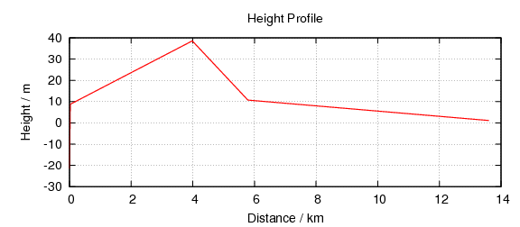

juh
Distance is 13.61km
Additional Information
created with
gpx2map
Additional Information
Back to top
Hover over markers for distance from start and height
Accumulated Ascend: 60 m
Accumulated Descend: 28 m
